Manual de JetBrains Rider
Índice
1. Introducción
2. Instalación
3. Configuración inicial
4. Plugins esenciales
5. Creación y manejo de proyectos
6. Exploración del IDE
7. Control de versiones (Git)
8. Depuración
9. Herramientas de productividad
10. Ejecución y pruebas
11. Integración con Docker y bases de datos
12. Optimización del IDE
13. Conclusiones
1. Introducción a JetBrains Rider
JetBrains Rider es un IDE multiplataforma para desarrollo en C#, F#, .NET, .NET Core, Unity, Unreal Engine y más. Combina la potencia de ReSharper con la velocidad de IntelliJ, ofreciendo un entorno moderno, rápido y altamente configurable.
2. Instalación
2.1 Requisitos del sistema
· Windows: 64‑bit, .NET Framework 4.7.2+, 8 GB RAM mínimo
· macOS: macOS 12+, Intel o Apple Silicon
· Linux: Ubuntu, Debian, Fedora o similares
2.2 Descarga
Sitio oficial: https://www.jetbrains.com/rider/
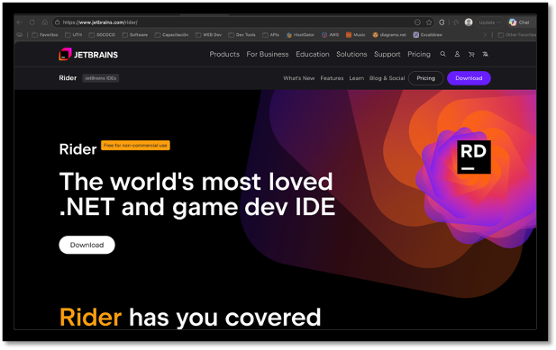
2.3 Instalación con JetBrains Toolbox
1. Descargar Toolbox App
2. Instalar y abrir
3. Buscar “Rider”
4. Instalar
5. Toolbox gestiona actualizaciones automáticamente
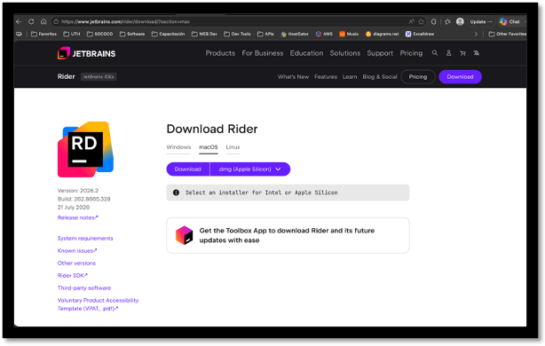
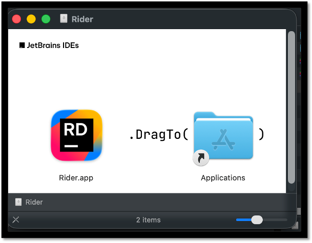
3. Configuración inicial
3.1 Creación de cuenta y selección de plan (free)
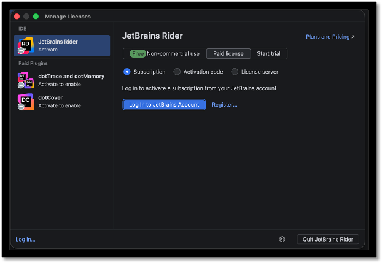
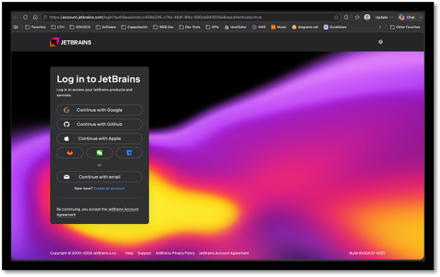
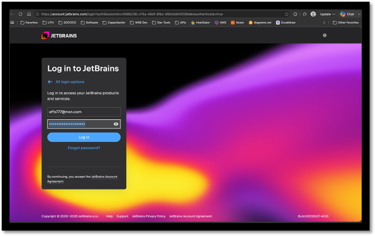
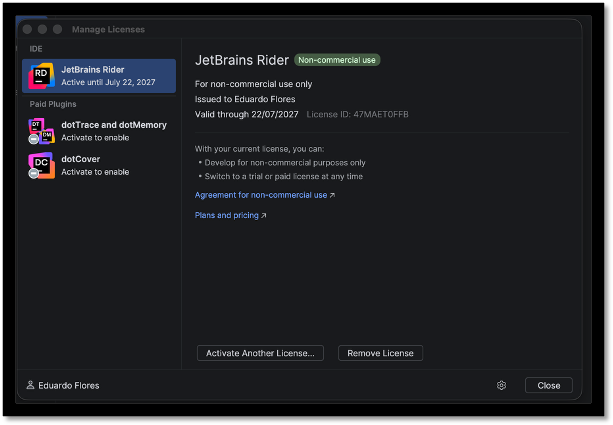
3.2 SDKs
Rider detecta automáticamente:
· .NET SDK
· .NET Framework
Ruta: Preferences → .NET → SDKs
4. Plugins esenciales
· Unity Support
· Azure Toolkit
· GitHub Copilot / AI Assistant
· Docker
· Database Tools
· Markdown Support
Instalación: Preferences → Plugins → Marketplace
5. Creación y manejo de proyectos
5.1 Crear un nuevo proyecto
1. New Solution
2. Seleccionar plantilla
3. Elegir SDK
4. Configurar nombre y ruta
5. Crear
5.2 Abrir un proyecto existente
Compatible con:
· .sln
· .csproj
· Unity
· Unreal Engine
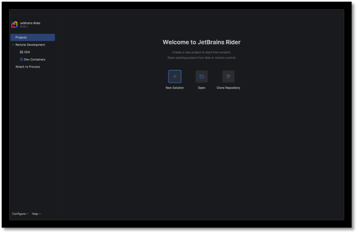
6. Exploración del IDE
6.1 Solution Explorer
· Árbol de archivos
· Dependencias
· Tests
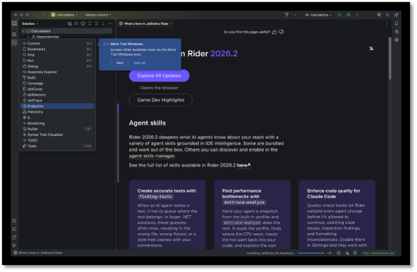
6.2 Editor inteligente
· Autocompletado
· Refactorización
· Quick Fixes (Alt+Enter)
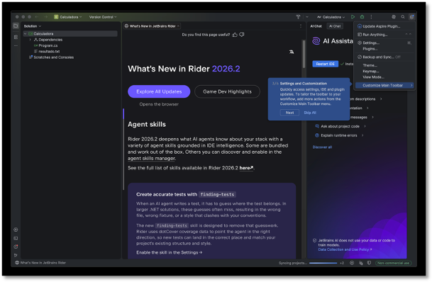
6.3 Terminal integrada
Compatible con Bash, zsh, PowerShell, CMD.
7. Control de versiones (Git)
7.1 Integración nativa
· Commit
· Push
· Pull
· Merge
· Rebase
7.2 GitHub / GitLab
· Autenticación OAuth
· Clonar repositorios
· Crear Pull Requests
---
8. Depuración
8.1 Breakpoints avanzados
· Condicionales
· Dependientes
· Temporales
8.2 Inspección de variables
· Watch
· Evaluate Expression
· Memory View
8.3 Depuración en Unity
· Attach to Unity
· Debug de scripts
· Visualización de GameObjects
9. Herramientas de productividad
· Code Cleanup
· Refactorización automática
· Navegación inteligente
· Live Templates
· Bookmarks
10. Ejecución y pruebas
10.1 Ejecutar proyecto
· Run
· Perfiles
· Variables de entorno
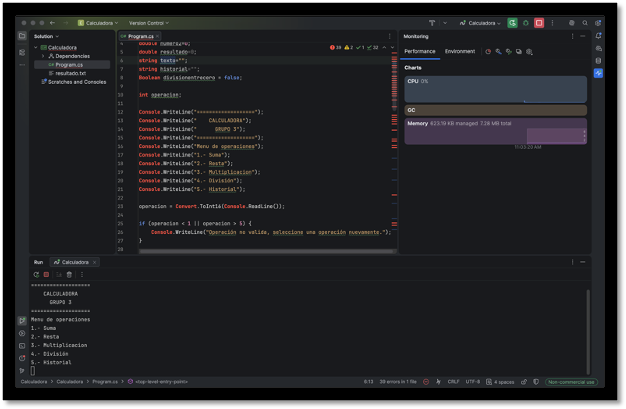
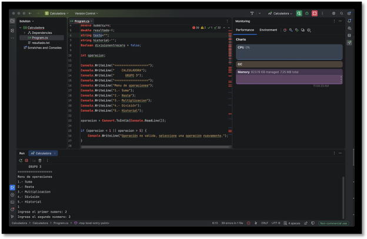
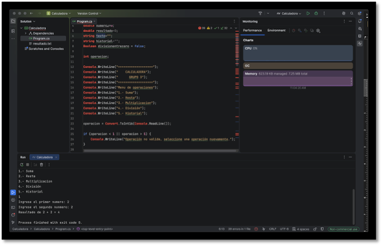
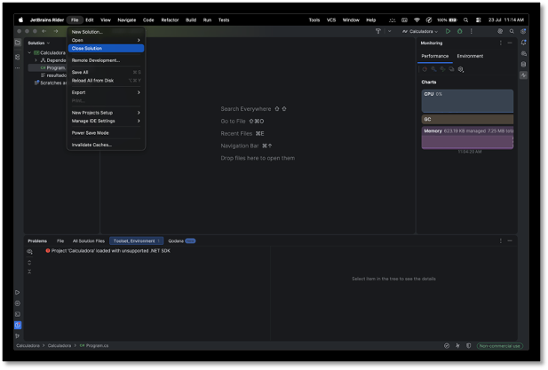
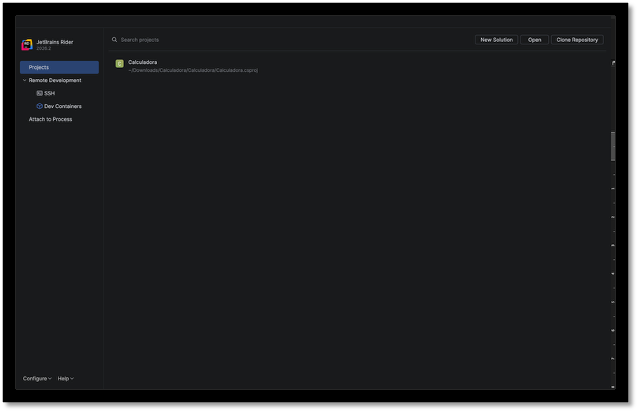
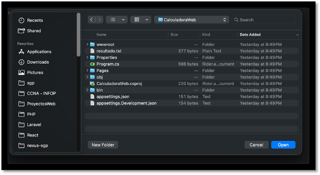
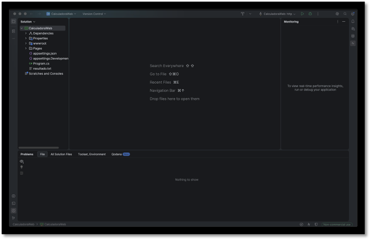
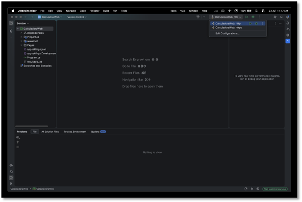
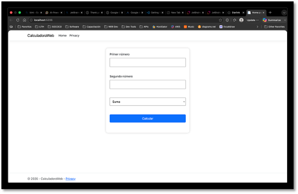
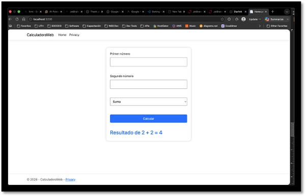
10.2 Pruebas unitarias
Compatible con NUnit, xUnit, MSTest.
11. Integración con Docker y bases de datos
11.1 Docker
· Ver contenedores
· Logs
· Construir imágenes
11.2 Bases de datos
Compatible con PostgreSQL, MySQL, SQL Server, SQLite.
Incluye editor SQL y diagramas.
12. Optimización del IDE
· Ajustar memoria
· Desactivar plugins
· Indexación inteligente
· Auto-save
· Modo performance
13. Conclusión
Después de trabajar con JetBrains Rider y Visual Studio Code en distintos proyectos, la diferencia en el uso diario es bastante clara. VS Code es rápido, liviano y súper flexible, pero al final sigue siendo un editor que depende de extensiones para casi todo. En cambio, Rider ya trae integrado todo lo que necesito para trabajar en C#, .NET, Unity o APIs más grandes sin tener que andar ajustando plugins o peleando con configuraciones.
En Rider la navegación, la refactorización y el análisis de código se sienten más sólidos y coherentes. Las herramientas están pensadas para flujo de trabajo profesional, y eso se nota cuando el proyecto crece o cuando la solución tiene varios módulos. VS Code funciona bien para cosas pequeñas o cuando mezclo lenguajes, pero cuando quiero productividad real en .NET, Rider simplemente me da más.
En resumen, si estoy armando algo rápido o necesito un editor liviano, uso VS Code. Pero cuando quiero trabajar serio en C#, con buen debugging, refactorización y herramientas integradas, Rider me hace avanzar más rápido y con menos fricción.